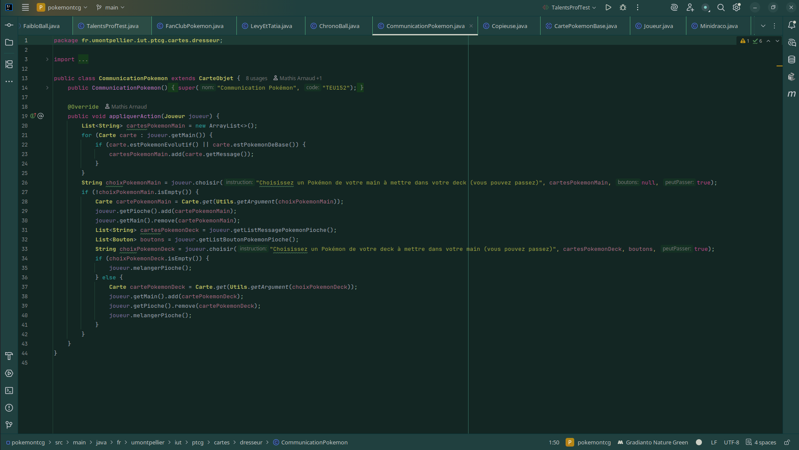
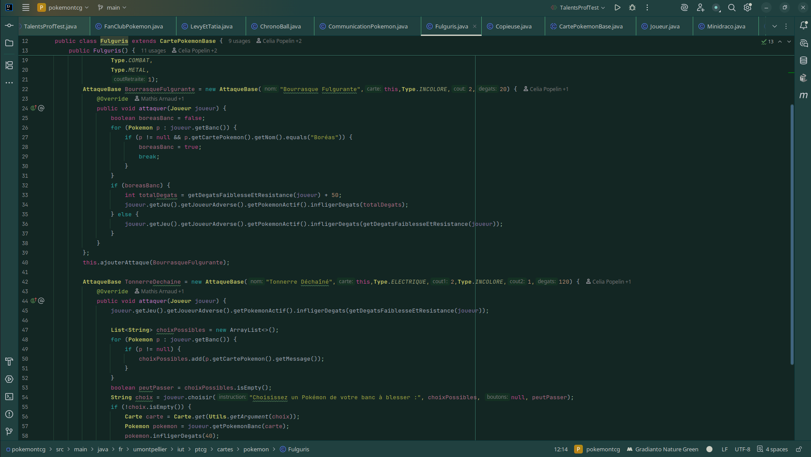
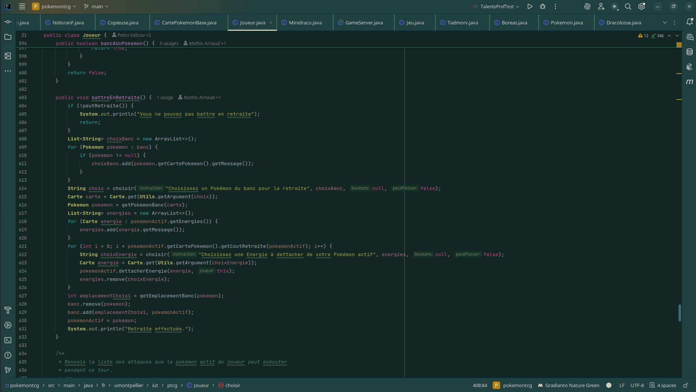
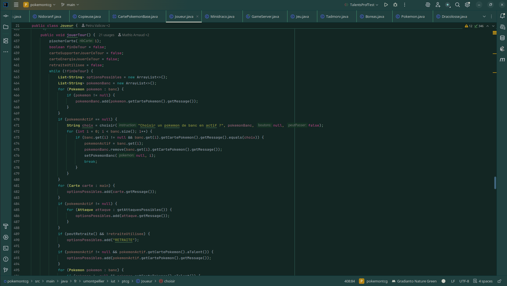
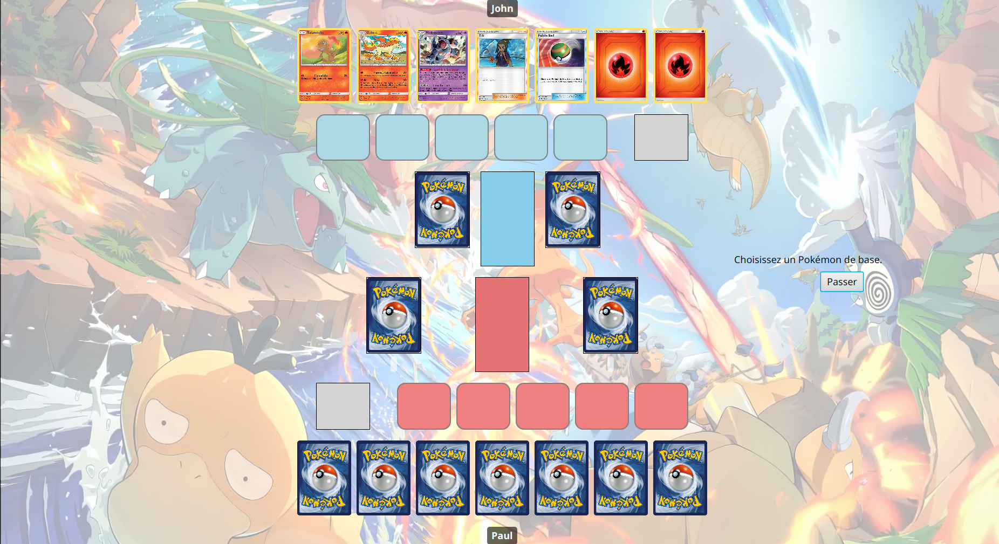

SAE 2.01 et 2.02 – Application web de jeu de cartes Pokémon
Projet de développement d’une application de jeu de cartes Pokémon, avec logique de jeu complète et interface utilisateur dédiée.
Contexte du projet
Ce projet a été réalisé dans le cadre de la SAE 2.01 et 2.02 en BUT1 Informatique. L’objectif était de concevoir et développer une application de jeu de cartes Pokémon en Java/JavaFX, sur une période d'un semestre, en équipe de 2. Le projet s’inscrivait dans la continuité des apprentissages en programmation orientée objet et en conception d’interfaces.
Méthodes de travail et résultats obtenus
Nous avons commencé par implémenter le fonctionnement du jeu (retraites, attaques, dresseurs, points de vie, évolution, etc) en Java. Cette étape a conduit à une structure orientée objet claire (classes, relations).
L’interface a été réalisée avec JavaFX pour permettre une interaction plus visuelle : affichage des cartes, actions possibles, états de la partie. Le projet a été développé de façon itérative, avec des ajouts successifs de fonctionnalités et des phases de test.
Le résultat final est une application jouable, illustrant une logique de jeu cohérente et une interface utilisateur fonctionnelle.
Voici quelques exemples de méthodes servant au fonctionnement du jeu et notre interface graphique :
    Compétences travaillées
- Programmation orientée objet avancée en Java.
- Conception d’interfaces graphiques avec JavaFX.
- Organisation et architecture du code pour un projet de taille moyenne.
- Travail en équipe sur un projet de développement.
- Tests, debugging et amélioration continue de l’application.
Ma contribution personnelle
J’ai travaillé sur l'implémentation du fonctionnement du jeu et la réalisation de l'interface graphique.